Juegos relajantes online
Dieciocho juegos relajantes para jugar en el navegador cuando necesitas desconectar unos minutos. No hay puntos, ni tiempo límite, ni forma de perder: solo tocar, mirar y escuchar.
Cada juego tiene su propia música generativa, que nunca suena igual: rastrilla un jardín zen, da de comer a los koi, suelta farolillos sobre un lago o despierta una aurora boreal. Funcionan en móvil y ordenador, sin descargas.
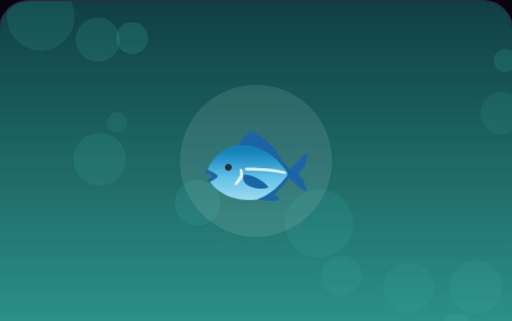
Estanque de KoiLos koi se acercan cuando tocas el agua y abren ondas a su paso. Dales de comer y deja que el estanque se calme solo.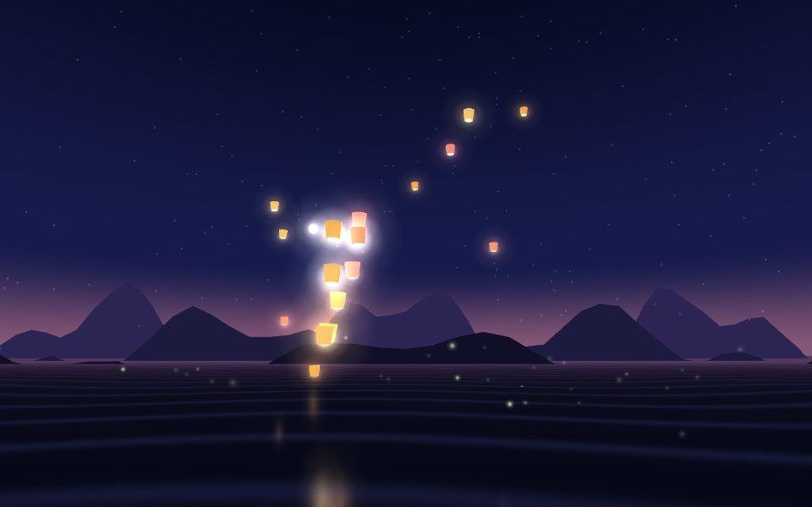
Farolillos del LagoAl anochecer, suelta farolillos de papel sobre el lago. Mantén pulsado para soltar varios y toca uno en el aire para…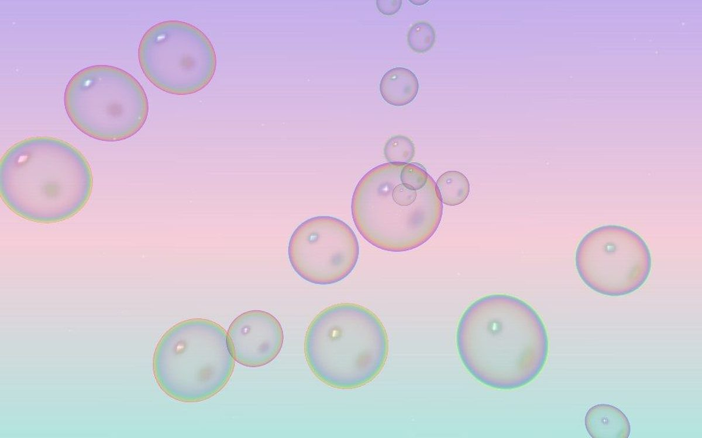
Pompas MusicalesCada pompa suena como una campanita al explotar. Rómpelas rápido y encadena una melodía que nunca suena igual.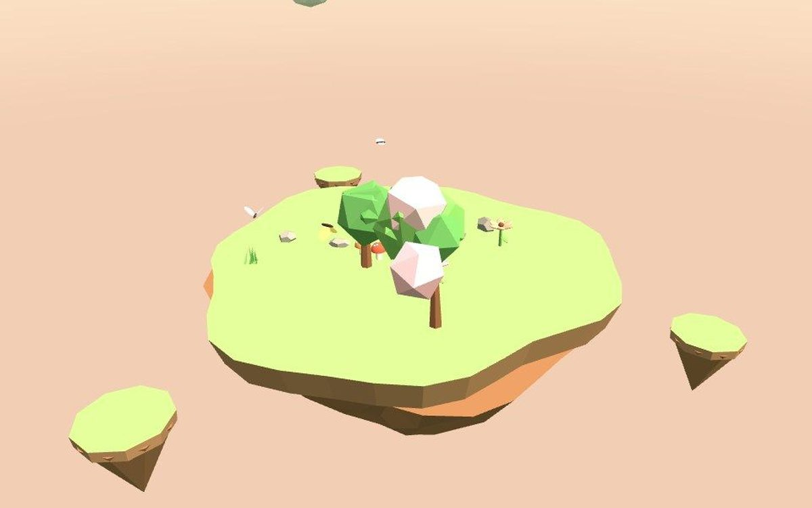
Isla JardínUna isla que flota en el cielo y crece contigo. Toca para plantar flores y árboles, y arrástrala para verla girar.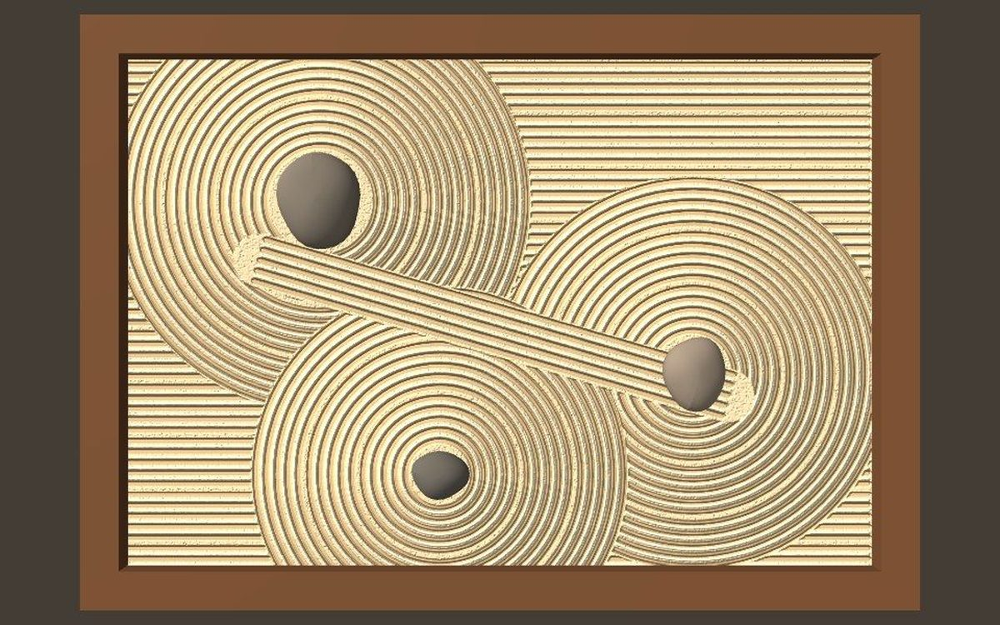
Jardín ZenRastrilla con el dedo un jardín de arena japonés. Dibuja surcos alrededor de las piedras, sin prisa y sin errores.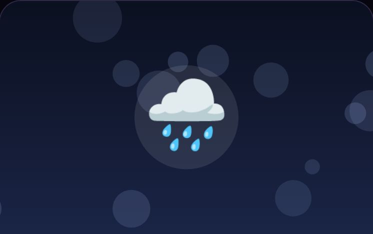
Cristal de LluviaLlueve sobre la ciudad de noche. Dibuja en el cristal empañado de la ventana y mira cómo el vaho lo borra poco a poco.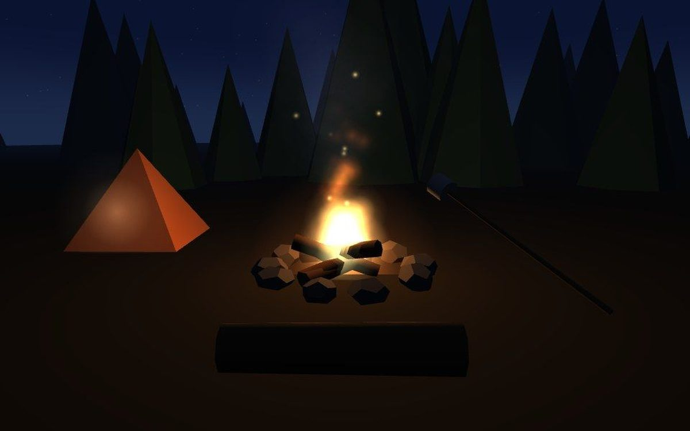
Hoguera NocturnaSiéntate junto al fuego bajo las estrellas. Echa troncos, escucha cómo crepita y tuesta malvaviscos hasta dejarlos…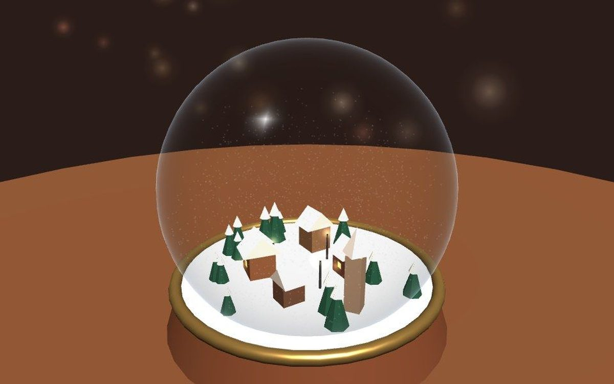
Bola de NieveAgita una bola de cristal y mira cómo cae la nieve. Cuando se posa, asoman pequeños tesoros escondidos.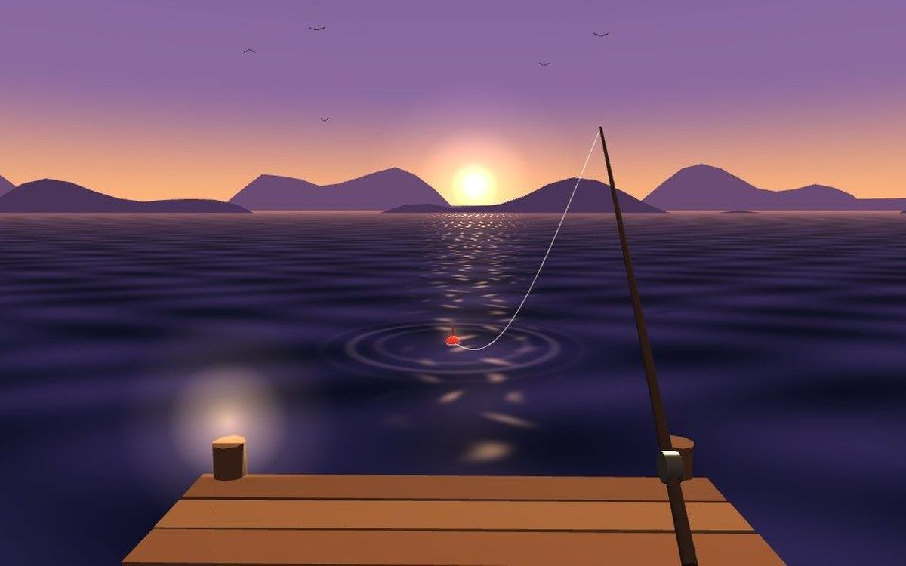
Pesca al AtardecerLanza el anzuelo desde el muelle con el sol bajando. Cuando el flotador se hunda, tira y llena la cesta sin prisa.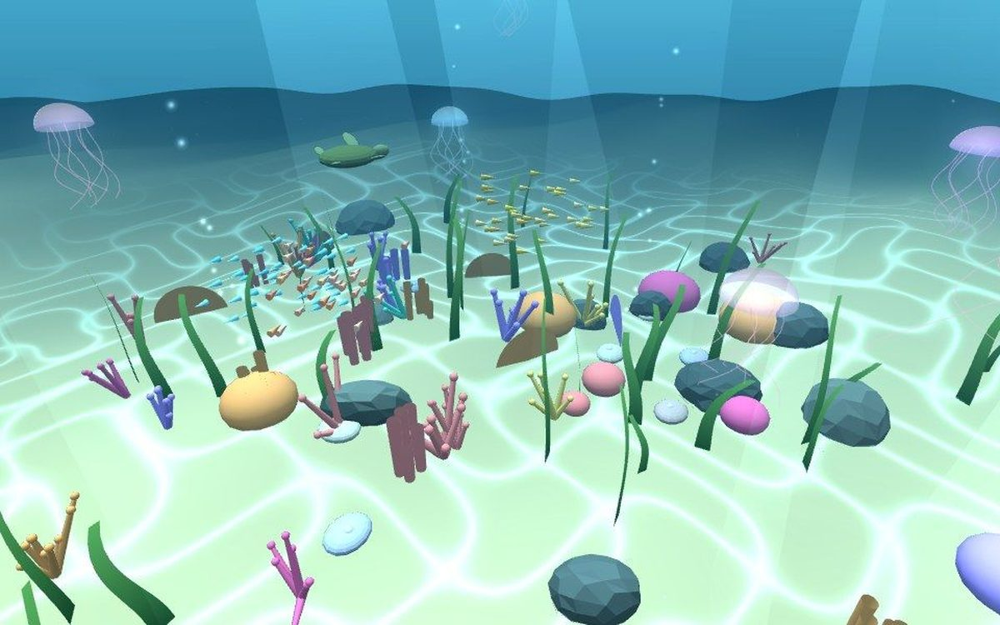
Arrecife de CoralBucea entre corales, medusas y bancos de peces. Mira a tu alrededor y abre almejas para encontrar perlas.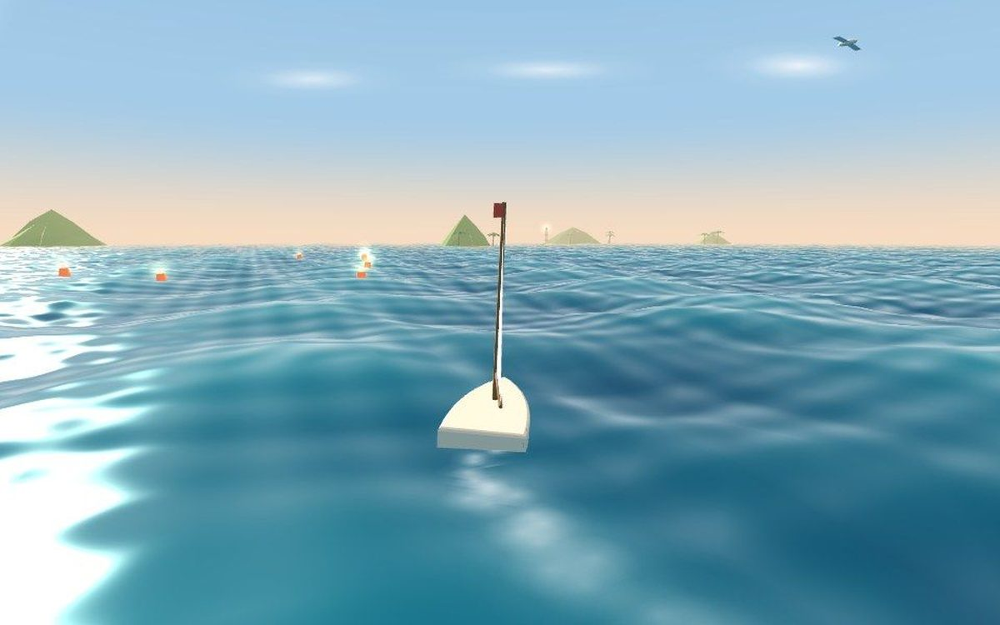
Velero entre IslasNavega con el viento entre islas y faros. Vira con un dedo y enciende las boyas de luz a tu paso.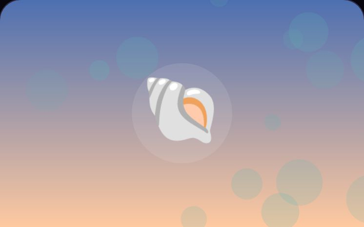
Orilla y MareaLas olas van y vienen sobre la arena. Recoge las conchas que deja la marea y deja tus huellas en la orilla seca.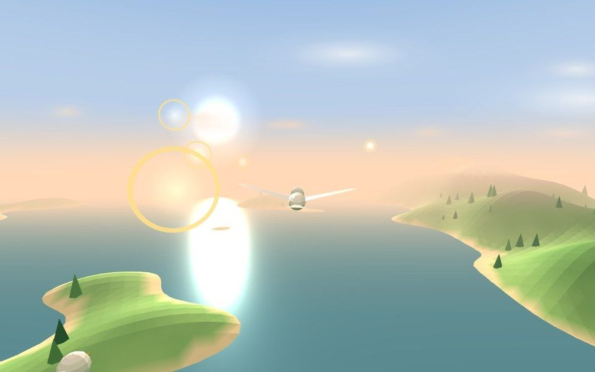
Vuelo del AmanecerVuela como un pájaro sobre valles y montañas al salir el sol. Guía con el dedo y cruza los anillos de luz.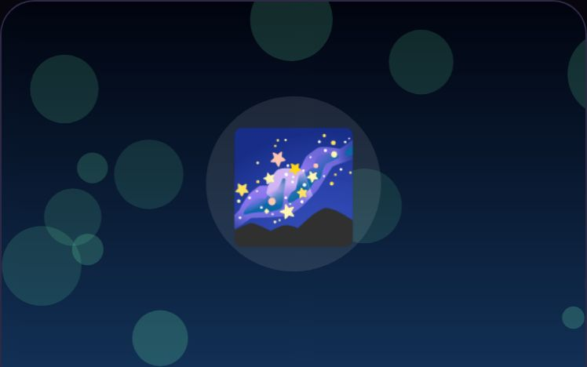
Aurora BorealDespierta auroras sobre un lago helado con solo tocar el cielo. Caza al vuelo las estrellas fugaces.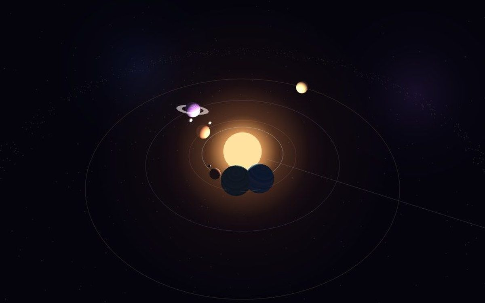
Órbitas MusicalesCrea planetas alrededor de un sol. Cada vuelta que dan suena una nota, y juntas forman tu propia música del espacio.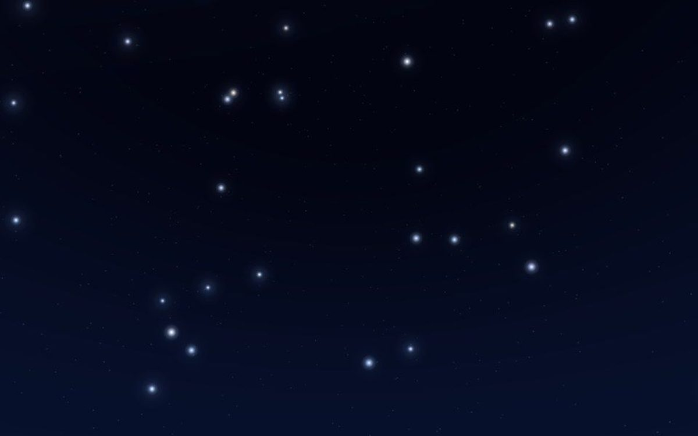
ConstelacionesUne estrellas con el dedo y dibuja tus propias constelaciones en un cielo nocturno que puedes recorrer.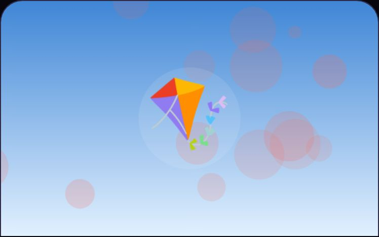
Cometa al VientoGuía una cometa entre las corrientes de aire y atrapa las semillas de diente de león que flotan en el cielo.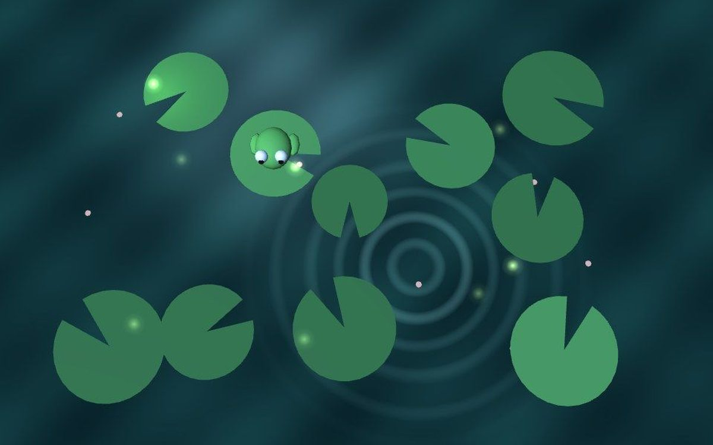
Rana y LuciérnagasSalta de nenúfar en nenúfar en un estanque nocturno. Si la rana cae cerca de una luciérnaga, la atrapa con la lengua.
Más colecciones
Jocs en català online i gratisJuegos de ritmo onlineJuegos de motos, coches y karts Todos los juegos